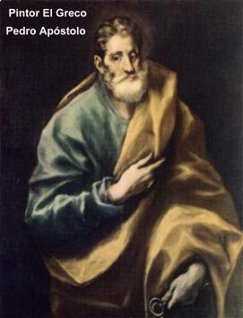
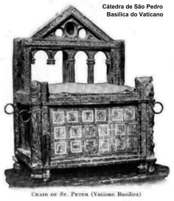
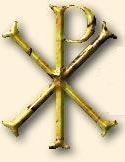
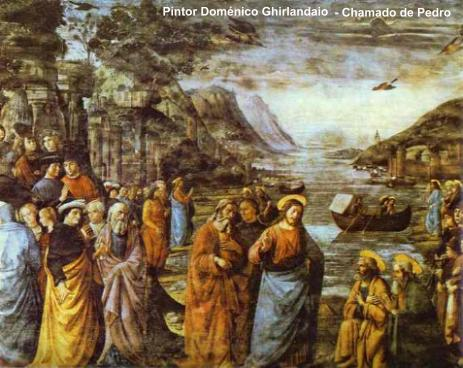

FAMILIARES, PROFISSÃO
E RESIDÊNCIA
Simão era filho de João e nasceu em
Betsaida, assim como o seu irmão André.
Possuía um gênio forte e
temperamento impulsivo, alojado num coração generoso e repleto de bondade. Não
se deixava vencer pela adversidade, revelava uma fibra invejável, embora a sua
coragem e iniciativa pessoal estivessem fundamentadas na própria força humana.
Homem simples, rude, de pouca instrução, dedicava-se à pesca. Fixou residência
em Cafarnaum da Galiléia, que era banhada pelo Lago de Genesaré, também
chamado Mar de Tiberíades ou Mar da Galiléia. Na pescaria tinha sociedade com o
seu irmão André e o trabalho começava cedo, porque procuravam regressar antes
do horário de almoço, a fim de poderem comercializar o pescado na cidade e
arredores. Como aquela região é muito quente no período do verão, Simão
adquiriu o hábito de pescar completamente despido (Jo 21,7), pois se sentia
melhor e com os movimentos mais livres. Quando terminava a pescaria, colocava
uma espécie de calção e uma veste, a fim de transportar o pescado em cestas
na companhia de André, para serem vendidos no mercado e na praça. Era casado,
mas pouco se conhece sobre a sua vida íntima, antes da conversão. O Novo
Testamento apenas registra a presença de sua sogra em Cafarnaum, conforme
escreveu São Mateus:
“Entrando JESUS na
casa de Simão (Pedro), viu a sogra deste que estava de cama e com febre. Logo lhe tocou
a mão e a febre a deixou. Ela se levantou e pôs-se a servi-LO”. (Mt 8,14-15)
Também o Evangelista João Marcos
registrou este acontecimento:
“E logo ao sair da sinagoga
(JESUS)
foi à casa de Simão e de André, com Tiago e João. A sogra de Simão estava
de cama com febre, e eles imediatamente o mencionaram a JESUS. E
(ELE) aproximando-se,
tomou-a pela mão e a fez levantar-se. A febre a deixou e ela se
pôs a servi-los.” (Mc 1,29-31)
Pelos textos, compreende-se
que André morava junto com o seu irmão Simão, e que além da esposa de Pedro também
morava na mesma residência, a sogra dele. Entretanto, naquele momento, a única
mulher que estava em casa era a sogra de Pedro e ela permanecia deitada com
febre. Depois de curada por JESUS é que teve condições físicas de preparar a
refeição para todos e foi servi-los. Assim sendo, pode-se deduzir que a esposa
de Simão estava ocupada em outra atividade, provavelmente ajudando na limpeza
e comercialização do pescado no mercado ou na praça. Isto porque, eles viviam
do trabalho e naquele momento Pedro estava com JESUS. Ela, a esposa, além
de cuidar da casa ajudava o marido no produto da pescaria e em todas as viagens
missionárias, conforme afirma São Paulo na Primeira Carta aos Coríntios:
“Não temos o direito de
levar conosco, nas viagens, uma mulher
(esposa) cristã,
como
os outros Apóstolos e os irmãos do SENHOR e
Cefas (Pedro) ?”
(1 Cor 9,5)
Isto acontecia, pela necessidade dos Apóstolos
serem servidos e não se preocuparem com as atividades domésticas, e assim, terem
mais tempo para evangelizar, confirmando desse modo, que Pedro levava consigo a
própria esposa durante as missões apostólicas. Este fato é também mencionado pelo
biógrafo Clemente de Alexandria no ano 190:
“a esposa de Pedro estava sempre ao lado dele, foi presa pelos soldados de Nero e
sofreu o martírio em Roma provavelmente no ano 64 ou 65.”
(Stromata, III, VII, página 306).
SANTA AURÉLIA
PETRONILLA
Por outro
lado, existe uma secular tradição de que o Apóstolo Pedro teve uma filha.
Esta notícia teve origem na afirmação do mesmo biógrafo Clemente de Alexandria
que escreveu no ano 189/190, “que
Pedro tinha uma filha” (conforme Stromata, III Vol., VI Cap.,
página 276, 2ª edição Dindorf).
Para um homem casado como Simão Pedro ter
uma filha, é um fato absolutamente normal. Acontece todavia, que nem a Tradição
Cristã e nem os evangelistas mencionam o fato. João Marcos (o Evangelista) que
acompanhou o Apóstolo ao longo do trabalho evangelizador e inclusive era o seu
interprete em Roma, não escreveu nada sobre o assunto. E Marcos, como sabemos,
escreveu o Segundo Evangelho de NOSSO SENHOR JESUS CRISTO, essencialmente baseado
na autoridade e na pregação oral de Simão Pedro, a pedido dos cristãos romanos
que queriam possuir por escrito o ensinamento do Apóstolo
de JESUS. Então, oficialmente, por testemunho seguro e prova evidente, nada
existe de concreto sobre a filha de Pedro, muito embora ela pudesse ter
existido, sem contudo, aparecer no imenso cenário do cristianismo. Entretanto,
na sequência dos anos, as noticias cresceram em intensidade e inclusive alguns
biógrafos associam a possível filha do Apóstolo, ao nome de Aurélia Petronilla,
como se esse fosse o verdadeiro nome dela.

O nome de Aurélia
Petronilla, era de uma romana que viveu no século I, sendo bem provável que
tenha se convertido ao cristianismo através das pregações e ensinamentos do
Apóstolo Simão Pedro. Era filha de Tito Flavio Petrônio, e pertencia a estirpe
do futuro Imperador Romano. O seu parentesco é testemunhado de modo
inconfundível pelo fato de ter sido sepultada no Cemitério que pertencia à
família e que era chamado Cemitério de Flavia Domitila. Mulher de grande beleza,
conforme afirmam os historiadores, foi oferecida em casamento (como era costume
naquela época) a um nobre chamado Flacco e tinha somente três dias para
se decidir. Agora convertida ao cristianismo, não quis aceitar aquela situação,
e por isso mesmo, sofreu muito e ficou excessivamente deprimida, se consumindo
numa terrível batalha íntima. Rezava e fazia mortificações, em vão, porque a
nostalgia causada pelo fato, alterava o seu equilíbrio espiritual. Suplicou
a ajuda Divina para solucionar o problema que lhe afigurava como muito grave
e abominável, considerando que pretendia perseverar e manter a virgindade.
Preferia morrer a se casar com aquele homem. No terceiro dia, após ter recebido
a Sagrada Comunhão (a Fração do Pão, como os cristãos celebravam), envolvida
por forte comoção, desmaiou e perdeu os sentidos, caindo nos braços de sua mãe,
que ao ampará-la percebeu que ela estava morta em seus braços. A vivacidade de seus
reflexos e seu agradável sorriso, desapareceram de sua face. Foi sepultada no Cemitério
de Domitila, na via Ardeatina, ao lado de dois mártires: soldado Nereo e Achilleo
(conforme De Rossi, "Roma sotterranea", I,180-1) (talvez esta seja
a
razão porque também a chamavam de mártir). Era muito venerada
pelo povo e sua sepultura frequentemente visitada. No ano 390/395 sob a ordem
do Papa Sirício, foi construído no local uma bonita Igreja. No século VIII, ano 757,
o Papa Paulo I se empenhou e cumpriu a promessa de seu antecessor, Papa Estevão III
que havia prometido a Pepino, Rei da França, de transladar o corpo de Aurélia Petronilla
que tinha sido canonizada por suas virtudes especiais, daquela Igreja no cemitério,
para a Basílica de São Pedro no Vaticano, construindo um altar próximo ao túmulo do
Apóstolo Pedro. Na verdade, a monarquia francesa desde a morte de Petronilla, sempre
acreditou que a Santa fosse realmente a filha carnal do Apóstolo Pedro. E este foi
o motivo porque originou a solicitação do rei da França ao Papa. A devoção do povo
a Santa Petronilla cresceu, embora em seu altar fosse colocada a inscrição
"Ecclesiae romanae filii"
(denominando-a de romana filha da Igreja) e portanto filha adotiva da Igreja
e filha espiritual de São Pedro (porque foi convertida por ele). Assim sendo,
embora o Vaticano tenha acolhido a solicitação francesa transportando os restos
mortais de Petronilla para a Basílica de São Pedro, oficialmente não a considera
filha carnal do Apóstolo, mas somente
“filha espiritual” por ter sido convertida por Pedro.
Entretanto, alguns escritores desde aquela época, insistem e mantém a opinião
de que Santa Petronilla é de fato a filha de Pedro e inclusive, querem encontrar
parentesco até na semelhança dos nomes: Pedro e Petronilla, a fim de reforçar
a idéia do laço da paternidade do Apóstolo. Mas, embora na França também
permaneça enraizada a idéia de que Santa Aurélia Petronilla é a filha carnal
do Apóstolo São Pedro e por isso, é muito venerada e é patrona de diversas
Igrejas e organizações religiosas, na maioria da cristandade existe uma normal
aceitação de que Simão Pedro era casado e portanto podia perfeitamente ter
uma filha, mas que pela conclusão dos estudiosos a filha de Pedro não é Aurélia
Petronilla e sim uma outra santa mulher, que infelizmente a história ocultou
o seu nome para sempre.
O CHAMADO DE JESUS

André, irmão de Simão, era Discípulo de João
Batista e sempre o ajudava na organização do povo que acorria ao rio Jordão,
para ser batizado. Batista realizava um Batismo de Penitência, preparando as
pessoas para que se arrependessem de seus pecados e assim, dignamente recebessem o
Messias. André ouvia os ensinamentos de Batista e guardava diligentemente as
suas palavras, com uma grande esperança na chegada do SENHOR. Naquele dia, ele
estava do outro lado do rio Jordão, com João Batista e João Evangelista,
filho de Zebedeu, quando JESUS passando por eles, cumprimentou a distância e
seguiu o seu caminho.
João Batista falou:
“Eis o Cordeiro de DEUS”.
(Jo 1,36)
André e João Evangelista ouvindo, ficaram
emocionados e ansiosamente se despediram de Batista. Agitados e com o coração
pulando de alegria, se aproximaram do SENHOR.
JESUS convidou-lhes a segui-LO. Mais tarde, regressando a casa, André falou com
Simão que tinha encontrado o Messias e contou-lhe a novidade. Simão acolheu a
notícia com imenso prazer e logo se manifestou interessado em conhecer o
SENHOR. Juntos no dia seguinte encontraram JESUS, que olhando bem nos olhos
dele, falou:
“Tu és Simão, filho de João;
chamar-te-ás Cefas” (que traduzindo para o português significa
Pedra=Pedro). (Jo 1,42) (Pela riqueza do vocabulário português logo notamos a diferença
entre as duas palavras Pedro e Pedra. Por isso mesmo, não temos meios de avaliar a
força da palavra no original aramaico, que por ser um idioma pobre, com poucos
vocábulos, uma mesma palavra “Cefas”
indica o elemento rocha e o nome daquele que foi escolhido para Chefe
do Colégio Apostólico). Entretanto, importante é entender o significado e a intenção
do SENHOR. ELE quis fundar a sua Igreja edificando-a sobre a Pedra, a Rocha
indestrutível, que a torna firme e inabalável e por isso, mudou o nome
de Simão para Cefas=Pedra.

 Próxima Página
Próxima Página
Retorno ao Índice